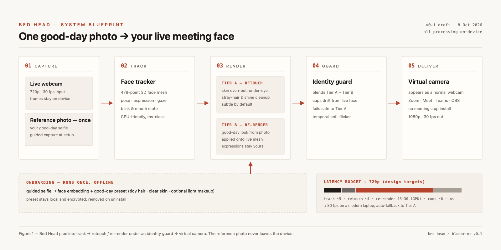

A meeting filter that keeps you on camera — just the rested, groomed, good-day version. One reference photo at setup; every call after that, you look presentable in one click.
Buildable: yes. Every hard component exists today as production software — face tracking (478-point meshes), generative re-rendering (LivePortrait-class models), and system virtual cameras. You are assembling proven parts, not inventing new science.
The moat is the identity lock. Naive deepfake pipelines make you look like a wax mask. The product problem is capping how far the render can drift from your real face so it reads as "you on a good day" at 30 fps. That guard, plus one-photo onboarding, is the differentiated engineering.
The market gap is real but soft. Built-in filters (Zoom/Meet/Teams) do skin smoothing only. xpression camera does full face swap — too far. Nothing mainstream does "my face, my reference photo, mildly fixed." That's your lane.
Setup, once: the app asks for a reference photo — a good-day selfie: hair done, skin clear, optionally light makeup, front-facing, good light. From it the app builds a local, encrypted good-day preset: a face embedding plus retouch parameters. The photo never leaves the device.
Every call after: Bed Head appears to Zoom, Meet, Teams, or OBS as an ordinary webcam. You pick "Bed Head Camera" as your camera, choose an intensity — Off / Subtle / Full rescue — and join. Bad hair reads tidy. Under-eye circles read rested. Last night reads slept. Mouth, blinks, head turns and expressions stay yours, live, because the output is your face being re-rendered each frame — not a static sticker over it.

Each frame from the webcam is tracked, enhanced, checked, and published to a virtual camera — in roughly 30–45 ms end to end on a modern laptop GPU, which is what 30 fps requires. The stages:
1 · Face tracking (solved problem). A landmark model fits a dense 3D mesh — 478 points covering jawline, hairline, eyes, lips — to your face every frame, plus head pose, gaze, and expression coefficients. Google's MediaPipe Face Landmarker does this in single-digit milliseconds on CPU and runs on macOS, Windows, iOS, Android and the web; it is the default open-source choice. Commercial SDKs (Banuba, DeepAR, FaceUnity) ship equivalent trackers bundled with beauty effects.
2 · Rendering — two tiers, one product. This is the core design decision, so it gets its own section below.
3 · The identity guard (your secret sauce). A small face-embedding model compares each output frame against both your live face and your reference embedding. If the rendered face drifts too far from "you" — waxiness, wrong jaw, frozen micro-expressions — the guard blends the render back toward the conservative tier. It also runs temporal smoothing so the face doesn't flicker between frames. Fail-safe direction is always toward your real face, never away from it.
4 · Delivery — the virtual camera. The enhanced frames are published to a camera device the OS exposes to every app. On macOS that is a Core Media IO camera extension inside your app bundle (the OBS/Meld/Zoom-SDK distribution path, App Store-eligible); on Windows, a DirectShow/MediaFoundation virtual camera driver. Zero cooperation needed from Zoom, Google, or Microsoft — which matters, because you cannot depend on meeting platforms blessing a third-party face-modifying layer.
Classical AR beauty, applied with the face mesh: even out skin tone, soften under-eyes, tame stray hair strands along the hairline, kill forehead shine, whiten teeth slightly, gentle jaw/eye symmetry. Runs on CPU, adds ~4–8 ms. This is the tier that ships first and never fails.
A generative portrait model conditioned on your reference preset re-renders your face each frame: the hairstyle and skin from your good day, driven by today's live expressions. Research lineage: LivePortrait (implicit-keypoint animation, ~12–30 ms/frame on GPU) and PSGAN/EleGANt-style makeup transfer from a reference photo. Deep-Live-Cam / DeepFaceLive prove single-image real-time face swapping works on consumer GPUs today.
Why two tiers, not one: pure retouch (Tier A) can't fix hair, and pure generative re-render (Tier B) is fragile — GPU dependence, occlusion glitches, uncanny-valley drift. Shipping Tier A first gives you a working, unembarrassing product in weeks; Tier B is the demo that goes viral. Same app, same mesh, dialable blend.
Prototype in Python/OpenCV where iteration speed matters; move to native (Swift / C++) for the shipping app. Mac first: it's the stricter virtual-camera platform, so passing it early de-risks the hard part. Windows follows with the DirectShow driver.
| Phase | What you build | Stack | Exit criteria |
|---|---|---|---|
| P0 · Spike 2–4 weeks |
Tracking + Tier A retouch live over webcam; OBS virtual camera as output | Python · OpenCV · MediaPipe Face Landmarker · OBS (virtual cam out) · streamlit/Tk control panel | 30 fps at 720p on a 3-year-old laptop; side-by-side A/B demo that makes people say "left one, please" |
| P1 · Tier B demo 4–8 weeks |
Reference-photo onboarding + generative re-render + identity guard blend | LivePortrait (or PersonaLive-class model) on GPU · InsightFace embeddings for the guard · pyvirtualcam | "Good-day me" demo clip: expressions live, hair/skin from reference, no waxiness for 60 continuous seconds |
| P2 · Alpha app 2–3 months |
Native Mac app: CMIO camera extension, preset manager, intensity dial, kill switch, on-device encrypted storage | Swift · Core ML / MPS for inference · CMIO extension · App Store notarization path | Installer works on clean Macs; Bed Head shows up in Zoom/Meet/Teams camera lists; crashes ≈ 0 in a week of dogfood |
| P3 · Windows + beta parallel |
Windows build with virtual camera driver; closed beta; fallback matrix (GPU→CPU, Tier B→A) | C++ / ONNX Runtime · DirectShow–MediaFoundation driver · installer signing (EV cert) | Cold-machine install < 5 minutes; frame rate holds on Intel integrated graphics (Tier A) |
Team shape: this is 1–2 engineers for the prototype (strong CV/ML generalist + one platform engineer for the camera extension and driver work — that part is unglamorous, certificate-signing-heavy, and genuinely the schedule risk). The models are open-weight; you're integrating, not training from scratch. Fine-tuning for identity stability can come after the beta proves demand.
Four clusters of incumbents. None occupies your exact position — "my face, my reference photo, subtly repaired" — but each holds part of the territory.
| Offering | What it does | Where it falls short of Bed Head |
|---|---|---|
| CLUSTER 1 — BUILT INTO MEETING APPS | ||
| Zoom — Touch Up My Appearance, Studio Effects | Slider-based skin smoothing; eyebrow/lip/beard touch-up; Studio Effects (lipstick, brows, beard) in desktop client | One generic smoothing kernel; no reference photo, no hair fix, no concept of "your good day." Feels like a filter, because it is one. |
| Google Meet — portrait touch-up | Off / Subtle / Smooth skin softening, web and mobile | Same story: smoothing only, no identity model. |
| Microsoft Teams — video effects & filters | Brightness/soft-focus/color frames; custom-filter apps; avatar mode | Retouch-lite plus cartoon avatars — nothing between those poles. |
| CLUSTER 2 — VIRTUAL-CAMERA BEAUTY APPS | ||
| Filteronme (free, Win/Mac) | Desktop virtual camera with beauty filters for any meeting app | Preset sliders, not your face; no generative tier, no hair. |
| Streamfog / LookGood Live / GlowCam | OBS/browser-based real-time smoothing, makeup, backgrounds | Same generic-filter ceiling; aimed at streamers more than 9 a.m. standup. |
| CyberLink YouCam / PerfectCam | The veteran: live makeup, skin tools, background replace over Zoom/Teams | Old-gen AR: makeup stickers and blur, no reference-image identity, dated UX. |
| Fineshare FineCam | AI virtual camera: enhancement, backgrounds, phone-as-webcam | "Enhancement" = color/sharpness tuning; no face model doing repair. |
| CLUSTER 3 — GENERATIVE FACE MACHINES | ||
| xpression camera | Real-time generative face replacement from any photo, works as a virtual camera in meetings | Closest technically — and proof the concept performs. But it's full character replacement (celebrities, memes), not "me, maintained." No restraint layer, and the market knows it as a toy/impersonation tool. |
| Avatarify (2020-era) | First-order-motion avatars for Zoom; famously viral | Abandoned and jittery; historically significant, commercially dead — a warning about quality bar, and evidence of demand. |
| Deep-Live-Cam / DeepFaceLive (open source) | Real-time face swap from one photo (DLC) or trained models (DFL), webcam → stream | The raw engine for Tier B exists free today. Zero productization: no identity guard, no retouch tier, consent checks are your job. Your opportunity is exactly the layer on top. |
| CLUSTER 4 — SDKs YOU'D BUY INSTEAD OF BUILDING | ||
| Banuba Face AR | Face tracking + 28 morphs, 16 makeup types, beauty; desktop + mobile + web SDK | Covers Tier A out of the box (license fees); no reference-photo generative tier. |
| DeepAR | Similar SDK scope (11 morphs, 10 makeup types), web SDK strength | Same ceiling: excellent Tier A, no Tier B. |
| FaceUnity | Beauty + face tracking SDK, strong in Asian markets, desktop support | Tier A again; integration is build-vs-buy for your phase P0–P2. |
NVIDIA Broadcast deserves its own line: Studio Effects (skin smoothing, eye contact) is the best free Tier A on the market — but it's welded to RTX GPUs and Windows, does no hair/generative work, and NVIDIA gives it away to sell cards. It defines the quality floor you must beat with the reference-photo concept, not with smoother smoothing.
Snap Camera is the cautionary tale: huge distribution (Snapchat lenses on every video app, 2019–2023), shut down January 2023, and the graveyard of "alternatives" sites it left behind is basically the Cluster 2 market. Demand for filters-in-meetings is real; Snap monetized none of it. Charge from day one.
Picture an axis from untouched camera to full avatar. The built-ins cluster at "slightly softened." xpression camera and the deepfake tools live at "someone else entirely." The middle — recognizably you, but maintained, from your own reference photo — is unoccupied by anything with a quality bar above novelty.
Differentiators that are hard to copy quickly: the identity guard (nobody ships drift-capped rendering); one-photo onboarding tuned for "use my Tuesday selfie, not a studio headshot"; the two-tier fail-safe design; and privacy positioning (on-device reference photo in a market where "deepfake app" otherwise screams cloud upload).
Honest risks: Apple or Zoom could ship "reference-photo touch-up" natively and compress this market overnight — so speed and brand (the name is genuinely great) matter. Tier B needs a GPU, which excludes low-end laptops (Tier A covers them). And the word "deepfake" will follow you into every app-store review and enterprise procurement conversation; the consent-first architecture in §06 isn't optional garnish, it's the difference between "beauty tool" and "impersonation tool" in the eyes of platforms, press, and law.
The one-sentence version: the parts are proven, the gap is real, the moat is restraint — the identity guard that keeps the render honest is what turns commodity deepfake tech into a product people trust on a Monday standup.